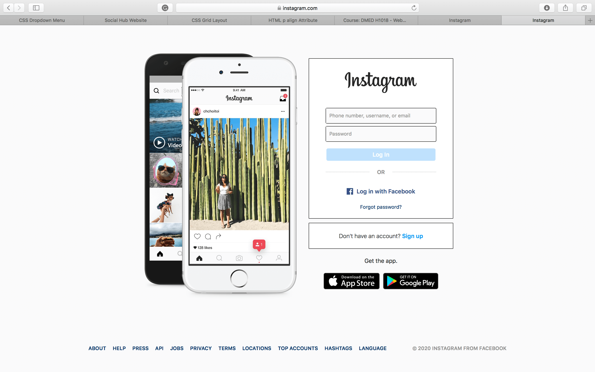
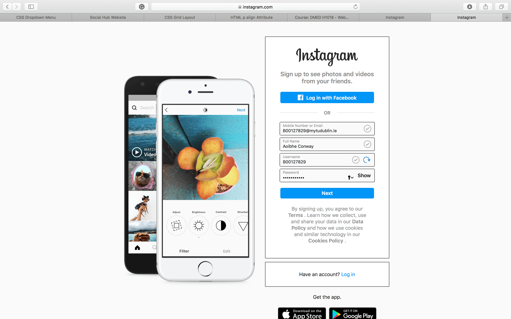
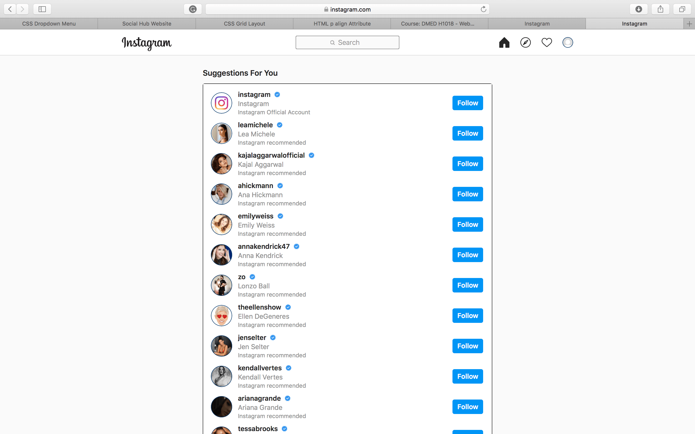

Instagram is a free social media platform which allows users to share pictures and videos with other users. Instagram allows it users to edit pictures and videos in app. Instagram allows users to ‘tag’ users in pictures and videos . the company was founded in 2010 by Kevin Systrom and Mike Krieger. It was later acquired by Facebook in 2012 for 200 million dollars. Users can like and comment on phots and videos. It is also a useful business tool as small business can use this to promote there products and show how they work through short videos. It can also be used too direct adds towards a specific person according to Instagram 1 million advertisers around the world se Instagram too promote. Its available both as a app for android and iOS and a website.
*NOTE* You must be 13 or older according to twitter rules to set up an account and use the app
If you have an android phone or an iphone, you can simply head to the Google play store on android, or the appstore on Iphone and simply click install.
Registering an instgram account for the first time is very easily done.. in 3 easy steps as I will show you below.
Download instagram and hit the sign up button.
Next you will be promted to create your email adress or phone number and your full name.
As well as this you will need to input a username for your account and a password to secure it.
You have now created your account !! You can choose who would like to follow ..Enjoy.



Check out the education page to see how Instagram can be used in Eduaction